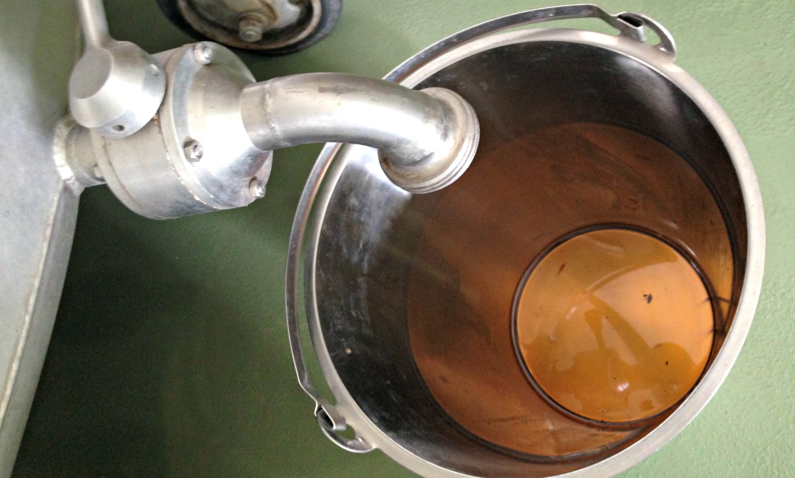
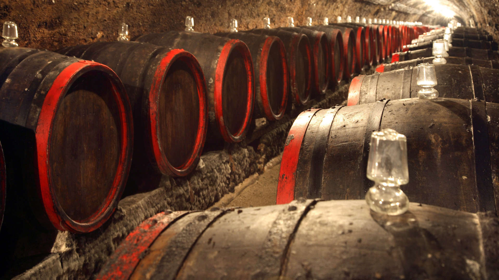

Az aszúborokat nagyon sokféleképpen készítették és készítik ma is. A 17-18. század kísérletezéssel telt
el, ennél fogva sok módozata alakult ki az aszúkészítésnek. A későbbiekben a minőség, s így az
eladhatóság megőrzése érdekében szabványosítani kellett e folyamatot, a benne szereplő anyagokat.
Több értekezés és tudományos munka származik már ebből az időből. Végül a szabványosítást törvényerejű
rendeletekben foganatosították. Ezek a szabványok főleg az arányokról szóltak. Közülük egy 1801-ből való
határozat részletét idéznénk: "Valamint a hegyallyai, vagy-is gönczi hordó, 180 ittzés lészen, úgy az
ántalag 90, a Puttonnak pedig, mellyel az aszút mérettetik, 45 ittzésnek lenni kelletik, hogy négy
Putton egész hordót üssön." Az aszú évszázados technológia alkalmazásával készül, amelynek alapja az
aszúsodott szőlőszemek szemenként történő, késői szüretelése, és az ezt követő különleges borkészítési
eljárás. Az aszú borok készítését napjainkban a hatályos tokaji borleírás szabályozza. A szüretre
általában október és december között kerül sor. A szőlő szüretelésekor az aszúszemeket egyesével, kézzel
szedve válogatják ki a szőlőfürtökből, így többszöri szedés (évjárattól függően három-négy) is
szükséges. Ez is magyarázza az aszúborok viszonylag magas árát, hiszen rendkívül munkaigényes
folyamatról van szó.
A szedést követően szükséges tárolni az aszúszemeket. Régen ez fa kádakban történt. Ekkor még nem
taposták meg a szemeket, hogy előbb kinyerjék belőlük a nektárt. A levet, ami kifolyt a szőlőszemek
saját súlyánál fogva, s amit ma esszenciának nevezünk, külön edényben fogták fel. Ez a különlegesség -
mondani sem kell - hatalmas cukortartalommal rendelkezik, s olyan egészségmegőrző és tápanyagokban
gazdag, hogy gyógyszerként is ismertté vált.

Aszúesszencia kinyerése
Feltárás
A töppedt szemek héja a száradás következtében szilárdabbá válik. Emiatt nehezebben is átjárható a
hozzáadott folyadék számára, azaz nehezen veszi magába áztatáskor a bort, avagy mustot. Tehát az
aszúszemeket a jobb anyagkinyerés céljából nemcsak egyszerűen hozzákeverték a borhoz vagy a musthoz,
hanem előtte feltárták. Ez azt jelenti, hogy a szemeket szétnyomkodták úgy, hogy a magok ne sérüljenek.
E célra a taposás felelt meg leginkább. Minden aszútábla mellett ott volt egy taposókád: az a három,
esetenként négylábú edény, amelyben a férfiemberek csupasz lábbal tapodták a szemeket. A folyamat úgy
zajlott, hogy a megfelelő puttonyszámú termést beöntözgették a kádba, a bennlévő férfiú marokszámra maga
elé rakosgatta az aszúsodott bogyókat, megtaposta a kívánatos mértékben, majd a kád másik végébe tolta a
képződött kupacot. Aztán fogta a következő marokkal, azt is megdolgozta, egészen addig, míg el nem
fogyott a kiöntött mennyiség. A művelet komolyságát jelzi, hogy a taposó lábmosására is külön szabályzat
vonatkozott, amely egy meglehetősen hosszú és alapos macerát takart. (Volt olyan eset is, amikor
teknőben, kézzel történt a feltárás, de inkább csak akkor, ha az aszúszem mennyisége nem volt túlságosan
nagy.) A taposást amúgy addig kellett végezni, míg az adott mennyiség tészta állagú nem lett. Úgy is
hívták a végeredményt: aszútészta. Ez vált alkalmassá arra, hogy hozzákeverjék a borhoz vagy musthoz.
Manapság is végzünk feltárást, de már mechanikus gépek segítségével, egész pontosan egy csigaszivattyú
nevű szerkezettel. A cél ugyanaz: a szemeket egy tésztaszerű állapot eléréséig darálni. Mindezt a mag
megsértése nélkül. De vannak olyan feldolgozás technikák is, melyek ezt a lépést elhagyják, mérlegelve a
gyorsabb kioldás előnyeit, illetve a sérülésveszély hátrányait.
Áztatás, borkészítés
Az aszúszemekben meglévő anyagok kioldása áztatással történik. A feltárt aszúszemeket borhoz, musthoz
vagy félig erjedő musthoz keverik. Ezt 24-48 órán keresztül folyamatosan újra és újra fölkeverik, hogy a
szemekben rejlő anyagok jól elegyedjenek a borral vagy musttal. Ezzel együtt felszabadulnak az aszúban
lévő magok és héjdarabok. Ezek könnyebbek, mint a folyadék, így felúsznak a kád tetejére, s ott egy
réteget képeznek. Ekkor van lehetőség az eltávolításukra, ami általában valamilyen szűrő segítségével
történik meg. Az áztatás az aszúkészítés jelentős lépése. A borász dönti el, hogy mivel oldja ki az
értékes anyagokat: no persze, itt is megvan mindegyik megoldásnak az előnye és a hátránya. A 18.
században többnyire musttal történt a kioldás, de előfordult az is, hogy borral, sőt, óborral.
Összességében elmondható, a különböző módszerek mutatnak ugyan némi eltérés, de a cél minden esetben a
botrítiszes bogyókban meglévő értékes anyagok minél nagyobb mértékű kinyerése. Az aszúszemek magas
cukortartalmával feldúsított és összekevert bort, mustot aztán leválasztjuk az aszútörkölyről. Ez egy
egyszerű színelést jelent. A visszamaradt törkölyt pedig sajtoljuk.
Az aszú ezt követően kerül lepincézésre. Merthogy a technológia harmadik fontos lépése az érlelés.

Érlelés hordóban
Mivel a borban lévő természetes antioxidánsok nincsenek elegendő mennyiségben jelen, ezért - a káros
folyamatoktól megvédendőként adunk hozzá. Ennek mértéke, időbeni elosztása, a bejuttatás módja
határozhatja meg egy bor karakterét. Ilyen befolyásoló tényező lehet a bor elhelyezése is, ami a Tokaji
Aszú hosszadalmas érlelési ideje miatt rendkívül fontos. Számos szempontot kell figyelembe venni egy
borásznak az érlelés alatt is. A bortörvény a minimumokat határozza meg, ami az aszú esetében három évet
jelent. Vagyis ennyi időn át kell érlelni, ebből kettőt fahordóban. Ilyen szigorú követelmények mellett
sok lehetőség nyílik a borok arculatának megválasztására.
Tartályban való tartás esetén a szőlő elsődleges ízeit kívánják megőrizni, a fahordós érlelés ugyanakkor
kialakítja a bor jellemző karakterét. Ennek mértéke a borász, illetve borászat sajátja, s így formálható
- sajnos még nem teljesen megszilárdult, meghatározott keretek között - a magáról kialakítandó kép. Az
viszont egészen bizonyos: a világon nincs még egy bor, amely képes kiállni akár több évtizedes fahordós
érlelést, s ennek folytán folyamatosan fejlődni. Erre csak a Tokaji képes.
Amitől pedig még furcsább mindez: a technológia a mai napig nem változott a 16. századihoz képest, csak
az alkalmazott gépek, berendezések csiszolódtak. S bár a kutatások révén és a vegytan fejlődésével
elvileg közelebb kerültünk a Tokaji Aszú titkának megfejtéséhez - amit Paracelsustól Voltaire-en át az
európai uralkodókig annyian kerestek, e rejtélyes és regényes múltú elixír még így is sok fejtörést
okozhat a jövő tudósainak.